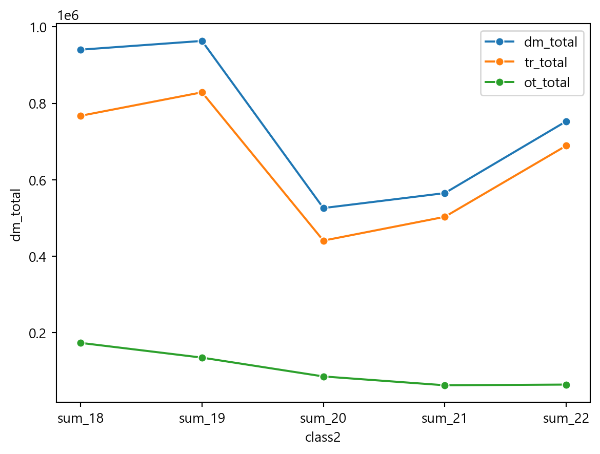
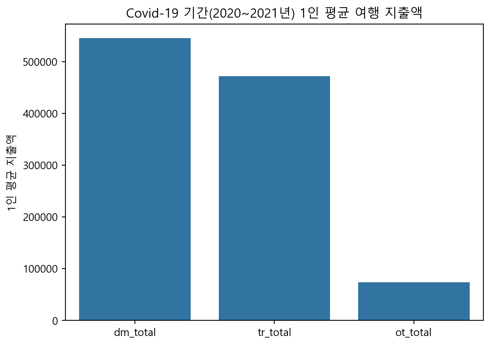
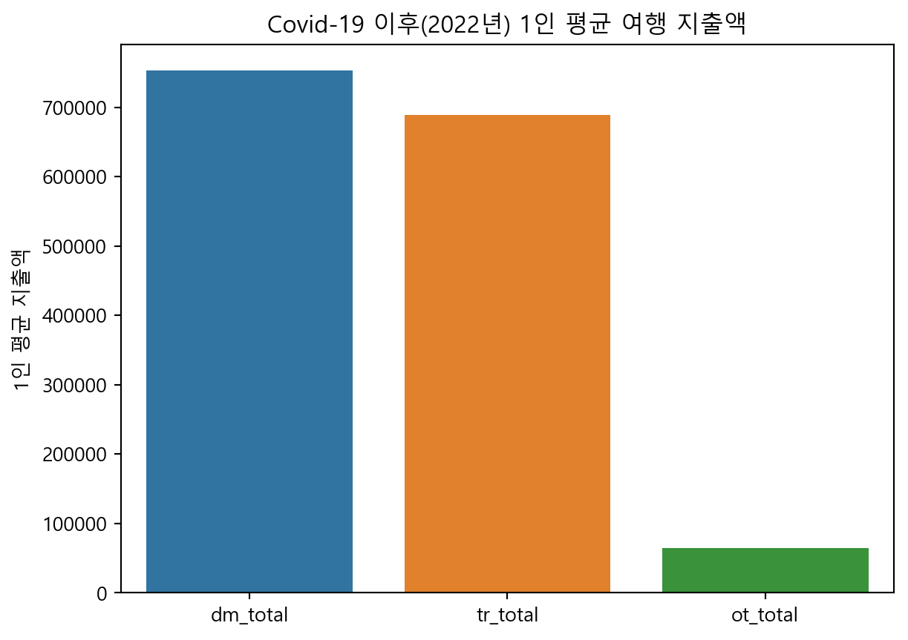
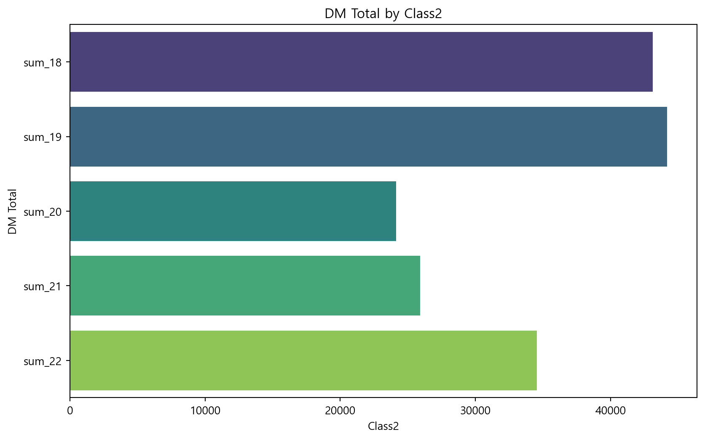

import pandas as pd
import numpy as np
import matplotlib.pyplot as plt웰컴투 코리아
분석 주제: “1인 평균 국내여행 지출액 비교: COVID-19 기간을 구분으로”
출처: 문화체육관광부,「국민여행조사」, 2022, 2024.07.19, 국내여행 지출액 URL: https://kosis.kr/statHtml/statHtml.do?orgId=113&tblId=DT_113_STBL_1029295&conn_path=I2
[!info] 참고 사항 1. 본 통계 값은 2023년 12월 만 15세 이상 인구수를 기준으로 모수 추정한 결과
- 본 통계의 ’만 15세 이상 전국민’은 2023년 장래인구추계인 45,872,017명을 기준으로 함
- 관광여행과 기타여행 구분
- 관광여행: 여행의 주된 목적이 ’관광‧휴양’인 경우
- 기타여행: 여행의 주된 목적이 ‘출장·업무’, ’단순 귀성, 단순 친구·친지 방문’인 경우
- 수록된 숫자는 단위 미만에서 반올림, 각 항목 값의 합이 총계(또는 전체)와 일치하지 않을 수도 있음
- 단위: 십억원
모수추정법 데이터 사용
통계학의 대전제는 분석 대상 전체(모집단)를 분석하기에는 많은 비용이 발생하므로 부분(표본)을 통해 모집단의 특성을 파악하는 것이다. 모집단의 일부인 표본에 통계 분석 방법을 적용해 모수를 추정하는 방법을 모수 추정이라 한다.
- 조사기간 및 조사대상 규모
# 1) COVID-19 이전: 2018년(48,000명), 2019년(50,400명) # 2) COVID-19 기간: 2020년(50,400명), 2021년(51,600명) # 3) COVID-19 이후: 2022년(51,600명)
1. 2022년 데이터 불러오기
- 원본 데이터(excel)상, 1행과 2행 일부가 병합되어 있음.
- 원본 데이터의 2행부터 불러오고자 header = 1로 설정하였음.
df_22 = pd.read_excel('data/domestic_2022.xlsx', header = 1)
df_22.head()| 통계분류(1) | 통계분류(2) | 국내전체 | 국내숙박 | 국내당일 | 관광전체 | 관광숙박 | 관광당일 | 기타전체 | 기타숙박 | 기타당일 | |
|---|---|---|---|---|---|---|---|---|---|---|---|
| 0 | 전체 | 소계 | 34533 | 24094 | 10440 | 31601 | 22528 | 9073 | 2932 | 1566 | 1367 |
| 1 | 성별 | 남자 | 16664 | 11420 | 5244 | 15062 | 10565 | 4497 | 1603 | 855 | 747 |
| 2 | NaN | 여자 | 17869 | 12673 | 5195 | 16539 | 11963 | 4576 | 1330 | 710 | 619 |
| 3 | 연령 | 15~19세 | 873 | 588 | 286 | 810 | 557 | 253 | 63 | 30 | 32 |
| 4 | NaN | 20대 | 6564 | 4637 | 1927 | 6277 | 4469 | 1808 | 287 | 168 | 119 |
2. 변수 이름 바꿔보기
데이터 변수 확인
df_22.columns
df_22 = df_22.rename(columns = {'통계분류(1)' : 'class1',
'통계분류(2)' : 'class2',
'국내전체' : 'dm_total',
'국내숙박' : 'dm_stay',
'국내당일' : 'dm_1day',
'관광전체' : 'tr_total',
'관광숙박' : 'tr_stay',
'관광당일' : 'tr_1day',
'기타전체' : 'ot_total',
'기타숙박' : 'ot_stay',
'기타당일' : 'ot_1day'
})3. ’class1’의 Nan 값에 class에 맞는 값 부여 & 영문명으로 변경
df_22.loc[0, ['class1']] = "category-sum"
df_22.loc[1:2, ['class1']] = "sex"
df_22.loc[3:9, ['class1']] = "age"
df_22.loc[10:16, ['class1']] = "job"
df_22.loc[17:20, ['class1']] = "edu"
df_22.loc[21:23, ['class1']] = "fam"
df_22.loc[24:30, ['class1']] = "income"4. ’class2’도 영문으로 변경
df_22.loc[0, ["class2"]] = "sum_22"#sex
df_22.loc[df_22["class2"] == "남자", "class2"] = "M"
df_22.loc[df_22["class2"] == "여자", "class2"] = "F"
#age
df_22.loc[df_22["class2"] == "15~19세" , "class2"] = "10s"
df_22.loc[df_22["class2"] == "20대" , "class2"] = "20s"
df_22.loc[df_22["class2"] == "30대" , "class2"] = "30s"
df_22.loc[df_22["class2"] == "40대" , "class2"] = "40s"
df_22.loc[df_22["class2"] == "50대" , "class2"] = "50s"
df_22.loc[df_22["class2"] == "60대" , "class2"] = "60s"
df_22.loc[df_22["class2"] == "70세 이상", "class2"] = "70s~"
#job
df_22.loc[df_22["class2"] == "임금봉급근로자" , "class2"] = "work"
df_22.loc[df_22["class2"] == "고용원있는사업주" , "class2"] = "co_ceo"
df_22.loc[df_22["class2"] == "고용원없는자영업자", "class2"] = "self-ceo"
df_22.loc[df_22["class2"] == "무급가족 종사자" , "class2"] = "fam_work"
df_22.loc[df_22["class2"] == "전업주부" , "class2"] = "house_work"
df_22.loc[df_22["class2"] == "학생" , "class2"] = "stu"
df_22.loc[df_22["class2"] == "기타" , "class2"] = "etc"
#edu
df_22.loc[df_22["class2"] == "초졸 이하" , "class2"] = "~prime_edu"
df_22.loc[df_22["class2"] == "중학교" , "class2"] = "middle_edu"
df_22.loc[df_22["class2"] == "고등학교" , "class2"] = "high_edu"
df_22.loc[df_22["class2"] == "대학교이상", "class2"] = "univ_edu~"
#fam
df_22.loc[df_22["class2"] == "1인" , "class2"] = "1p"
df_22.loc[df_22["class2"] == "2인" , "class2"] = "2p"
df_22.loc[df_22["class2"] == "3인이상", "class2"] = "3p~"
#income
df_22.loc[df_22["class2"] == "100만원 미만" , "class2"] = "~100"
df_22.loc[df_22["class2"] == "100~200만원 미만", "class2"] = "100~200"
df_22.loc[df_22["class2"] == "200~300만원 미만", "class2"] = "200~300"
df_22.loc[df_22["class2"] == "300~400만원 미만", "class2"] = "300~400"
df_22.loc[df_22["class2"] == "400~500만원 미만", "class2"] = "400~500"
df_22.loc[df_22["class2"] == "500~600만원 미만", "class2"] = "500~600"
df_22.loc[df_22["class2"] == "600만원 이상" , "class2"] = "600~"class1과 class2를 index로 설정
df_22 = df_22.set_index(['class1', 'class2'])5. 분석에 필요한 부분만 추출하기!
df_22에서 첫번째 행에서 dm_total, tr_total, ot_total 선택
1인당 지출 금액을 원 단위로 구하고자 기본 단위인 10억을 곱해주고
이를 전체 인구수(45,872,017명)로 나누었습니다.
df_22_sum = df_22.loc["category-sum", ["dm_total", "tr_total", "ot_total"]] * 1000000000 / 45872017
df_22_sum| dm_total | tr_total | ot_total | |
|---|---|---|---|
| class2 | |||
| sum_22 | 752811.894014 | 688894.931304 | 63916.96271 |
2018~2021 데이터도 동일하게 작업 진행
# 2018년
df_18 = pd.read_excel('data/domestic_2018.xlsx', header = 1)
df_18 = df_18.rename(columns = {'통계분류(1)' : 'class1',
'통계분류(2)' : 'class2',
'국내전체' : 'dm_total',
'국내숙박' : 'dm_stay',
'국내당일' : 'dm_1day',
'관광전체' : 'tr_total',
'관광숙박' : 'tr_stay',
'관광당일' : 'tr_1day',
'기타전체' : 'ot_total',
'기타숙박' : 'ot_stay',
'기타당일' : 'ot_1day'
})
df_18.loc[0, ['class1']] = "category-sum"
df_18.loc[1:2, ['class1']] = "sex"
df_18.loc[3:9, ['class1']] = "age"
df_18.loc[10:16, ['class1']] = "job"
df_18.loc[17:20, ['class1']] = "edu"
df_18.loc[21:23, ['class1']] = "fam"
df_18.loc[24:30, ['class1']] = "income"
df_18.loc[0, ["class2"]] = "sum_18"
df_18.loc[df_18["class2"] == "남자", "class2"] = "M"
df_18.loc[df_18["class2"] == "여자", "class2"] = "F"
df_18.loc[df_18["class2"] == "15~19세" , "class2"] = "10s"
df_18.loc[df_18["class2"] == "20대" , "class2"] = "20s"
df_18.loc[df_18["class2"] == "30대" , "class2"] = "30s"
df_18.loc[df_18["class2"] == "40대" , "class2"] = "40s"
df_18.loc[df_18["class2"] == "50대" , "class2"] = "50s"
df_18.loc[df_18["class2"] == "60대" , "class2"] = "60s"
df_18.loc[df_18["class2"] == "70세 이상", "class2"] = "70s~"
df_18.loc[df_18["class2"] == "임금봉급근로자" , "class2"] = "work"
df_18.loc[df_18["class2"] == "고용원있는사업주" , "class2"] = "co_ceo"
df_18.loc[df_18["class2"] == "고용원없는자영업자", "class2"] = "self-ceo"
df_18.loc[df_18["class2"] == "무급가족 종사자" , "class2"] = "fam_work"
df_18.loc[df_18["class2"] == "전업주부" , "class2"] = "house_work"
df_18.loc[df_18["class2"] == "학생" , "class2"] = "stu"
df_18.loc[df_18["class2"] == "기타" , "class2"] = "etc"
df_18.loc[df_18["class2"] == "초졸 이하" , "class2"] = "~prime_edu"
df_18.loc[df_18["class2"] == "중학교" , "class2"] = "middle_edu"
df_18.loc[df_18["class2"] == "고등학교" , "class2"] = "high_edu"
df_18.loc[df_18["class2"] == "대학교이상", "class2"] = "univ_edu~"
df_18.loc[df_18["class2"] == "1인" , "class2"] = "1p"
df_18.loc[df_18["class2"] == "2인" , "class2"] = "2p"
df_18.loc[df_18["class2"] == "3인이상", "class2"] = "3p~"
df_18.loc[df_18["class2"] == "100만원 미만" , "class2"] = "~100"
df_18.loc[df_18["class2"] == "100~200만원 미만", "class2"] = "100~200"
df_18.loc[df_18["class2"] == "200~300만원 미만", "class2"] = "200~300"
df_18.loc[df_18["class2"] == "300~400만원 미만", "class2"] = "300~400"
df_18.loc[df_18["class2"] == "400~500만원 미만", "class2"] = "400~500"
df_18.loc[df_18["class2"] == "500~600만원 미만", "class2"] = "500~600"
df_18.loc[df_18["class2"] == "600만원 이상" , "class2"] = "600~"C:\DS\Python\Python312\Lib\site-packages\openpyxl\styles\stylesheet.py:237: UserWarning:
Workbook contains no default style, apply openpyxl's default
- class1과 class2를 index로 설정
df_18 = df_18.set_index(['class1', 'class2'])- 분석에 필요한 부분만 추출
df_18_sum = df_18.loc["category-sum", ["dm_total", "tr_total", "ot_total"]] * 1000000000 / 45872017
df_18_sum| dm_total | tr_total | ot_total | |
|---|---|---|---|
| class2 | |||
| sum_18 | 940290.024744 | 767265.149906 | 173024.874838 |
2019년
df_19 = pd.read_excel('data/domestic_2019.xlsx', header = 1)
df_19 = df_19.rename(columns = {'통계분류(1)' : 'class1',
'통계분류(2)' : 'class2',
'국내전체' : 'dm_total',
'국내숙박' : 'dm_stay',
'국내당일' : 'dm_1day',
'관광전체' : 'tr_total',
'관광숙박' : 'tr_stay',
'관광당일' : 'tr_1day',
'기타전체' : 'ot_total',
'기타숙박' : 'ot_stay',
'기타당일' : 'ot_1day'
})
df_19.loc[0, ['class1']] = "category-sum"
df_19.loc[1:2, ['class1']] = "sex"
df_19.loc[3:9, ['class1']] = "age"
df_19.loc[10:16, ['class1']] = "job"
df_19.loc[17:20, ['class1']] = "edu"
df_19.loc[21:23, ['class1']] = "fam"
df_19.loc[24:30, ['class1']] = "income"
df_19.loc[0, ["class2"]] = "sum_19"
df_19.loc[df_19["class2"] == "남자", "class2"] = "M"
df_19.loc[df_19["class2"] == "여자", "class2"] = "F"
df_19.loc[df_19["class2"] == "15~19세" , "class2"] = "10s"
df_19.loc[df_19["class2"] == "20대" , "class2"] = "20s"
df_19.loc[df_19["class2"] == "30대" , "class2"] = "30s"
df_19.loc[df_19["class2"] == "40대" , "class2"] = "40s"
df_19.loc[df_19["class2"] == "50대" , "class2"] = "50s"
df_19.loc[df_19["class2"] == "60대" , "class2"] = "60s"
df_19.loc[df_19["class2"] == "70세 이상", "class2"] = "70s~"
df_19.loc[df_19["class2"] == "임금봉급근로자" , "class2"] = "work"
df_19.loc[df_19["class2"] == "고용원있는사업주" , "class2"] = "co_ceo"
df_19.loc[df_19["class2"] == "고용원없는자영업자", "class2"] = "self-ceo"
df_19.loc[df_19["class2"] == "무급가족 종사자" , "class2"] = "fam_work"
df_19.loc[df_19["class2"] == "전업주부" , "class2"] = "house_work"
df_19.loc[df_19["class2"] == "학생" , "class2"] = "stu"
df_19.loc[df_19["class2"] == "기타" , "class2"] = "etc"
df_19.loc[df_19["class2"] == "초졸 이하" , "class2"] = "~prime_edu"
df_19.loc[df_19["class2"] == "중학교" , "class2"] = "middle_edu"
df_19.loc[df_19["class2"] == "고등학교" , "class2"] = "high_edu"
df_19.loc[df_19["class2"] == "대학교이상", "class2"] = "univ_edu~"
df_19.loc[df_19["class2"] == "1인" , "class2"] = "1p"
df_19.loc[df_19["class2"] == "2인" , "class2"] = "2p"
df_19.loc[df_19["class2"] == "3인이상", "class2"] = "3p~"
df_19.loc[df_19["class2"] == "100만원 미만" , "class2"] = "~100"
df_19.loc[df_19["class2"] == "100~200만원 미만", "class2"] = "100~200"
df_19.loc[df_19["class2"] == "200~300만원 미만", "class2"] = "200~300"
df_19.loc[df_19["class2"] == "300~400만원 미만", "class2"] = "300~400"
df_19.loc[df_19["class2"] == "400~500만원 미만", "class2"] = "400~500"
df_19.loc[df_19["class2"] == "500~600만원 미만", "class2"] = "500~600"
df_19.loc[df_19["class2"] == "600만원 이상" , "class2"] = "600~"C:\DS\Python\Python312\Lib\site-packages\openpyxl\styles\stylesheet.py:237: UserWarning:
Workbook contains no default style, apply openpyxl's default
- class1과 class2를 index로 설정
df_19 = df_19.set_index(['class1', 'class2'])- 분석에 필요한 부분만 추출
df_19_sum = df_19.loc["category-sum", ["dm_total", "tr_total", "ot_total"]] * 1000000000 / 45872017
df_19_sum| dm_total | tr_total | ot_total | |
|---|---|---|---|
| class2 | |||
| sum_19 | 963179.79652 | 828718.737177 | 134461.059343 |
2020년
df_20 = pd.read_excel('data/domestic_2020.xlsx', header = 1)
df_20 = df_20.rename(columns = {'통계분류(1)' : 'class1',
'통계분류(2)' : 'class2',
'국내전체' : 'dm_total',
'국내숙박' : 'dm_stay',
'국내당일' : 'dm_1day',
'관광전체' : 'tr_total',
'관광숙박' : 'tr_stay',
'관광당일' : 'tr_1day',
'기타전체' : 'ot_total',
'기타숙박' : 'ot_stay',
'기타당일' : 'ot_1day'
})
df_20.loc[0, ['class1']] = "category-sum"
df_20.loc[1:2, ['class1']] = "sex"
df_20.loc[3:9, ['class1']] = "age"
df_20.loc[10:16, ['class1']] = "job"
df_20.loc[17:20, ['class1']] = "edu"
df_20.loc[21:23, ['class1']] = "fam"
df_20.loc[24:30, ['class1']] = "income"
df_20.loc[0, ["class2"]] = "sum_20"
df_20.loc[df_20["class2"] == "남자", "class2"] = "M"
df_20.loc[df_20["class2"] == "여자", "class2"] = "F"
df_20.loc[df_20["class2"] == "15~19세" , "class2"] = "10s"
df_20.loc[df_20["class2"] == "20대" , "class2"] = "20s"
df_20.loc[df_20["class2"] == "30대" , "class2"] = "30s"
df_20.loc[df_20["class2"] == "40대" , "class2"] = "40s"
df_20.loc[df_20["class2"] == "50대" , "class2"] = "50s"
df_20.loc[df_20["class2"] == "60대" , "class2"] = "60s"
df_20.loc[df_20["class2"] == "70세 이상", "class2"] = "70s~"
df_20.loc[df_20["class2"] == "임금봉급근로자" , "class2"] = "work"
df_20.loc[df_20["class2"] == "고용원있는사업주" , "class2"] = "co_ceo"
df_20.loc[df_20["class2"] == "고용원없는자영업자", "class2"] = "self-ceo"
df_20.loc[df_20["class2"] == "무급가족 종사자" , "class2"] = "fam_work"
df_20.loc[df_20["class2"] == "전업주부" , "class2"] = "house_work"
df_20.loc[df_20["class2"] == "학생" , "class2"] = "stu"
df_20.loc[df_20["class2"] == "기타" , "class2"] = "etc"
df_20.loc[df_20["class2"] == "초졸 이하" , "class2"] = "~prime_edu"
df_20.loc[df_20["class2"] == "중학교" , "class2"] = "middle_edu"
df_20.loc[df_20["class2"] == "고등학교" , "class2"] = "high_edu"
df_20.loc[df_20["class2"] == "대학교이상", "class2"] = "univ_edu~"
df_20.loc[df_20["class2"] == "1인" , "class2"] = "1p"
df_20.loc[df_20["class2"] == "2인" , "class2"] = "2p"
df_20.loc[df_20["class2"] == "3인이상", "class2"] = "3p~"
df_20.loc[df_20["class2"] == "100만원 미만" , "class2"] = "~100"
df_20.loc[df_20["class2"] == "100~200만원 미만", "class2"] = "100~200"
df_20.loc[df_20["class2"] == "200~300만원 미만", "class2"] = "200~300"
df_20.loc[df_20["class2"] == "300~400만원 미만", "class2"] = "300~400"
df_20.loc[df_20["class2"] == "400~500만원 미만", "class2"] = "400~500"
df_20.loc[df_20["class2"] == "500~600만원 미만", "class2"] = "500~600"
df_20.loc[df_20["class2"] == "600만원 이상" , "class2"] = "600~"C:\DS\Python\Python312\Lib\site-packages\openpyxl\styles\stylesheet.py:237: UserWarning:
Workbook contains no default style, apply openpyxl's default
- class1과 class2를 index로 설정
df_20 = df_20.set_index(['class1', 'class2'])- 분석에 필요한 부분만 추출
df_20_sum = df_20.loc["category-sum", ["dm_total", "tr_total", "ot_total"]] * 1000000000 / 45872017
df_20_sum| dm_total | tr_total | ot_total | |
|---|---|---|---|
| class2 | |||
| sum_20 | 525832.557134 | 440639.006565 | 85193.550569 |
2021년
df_21 = pd.read_excel('data/domestic_2021.xlsx', header = 1)
df_21 = df_21.rename(columns = {'통계분류(1)' : 'class1',
'통계분류(2)' : 'class2',
'국내전체' : 'dm_total',
'국내숙박' : 'dm_stay',
'국내당일' : 'dm_1day',
'관광전체' : 'tr_total',
'관광숙박' : 'tr_stay',
'관광당일' : 'tr_1day',
'기타전체' : 'ot_total',
'기타숙박' : 'ot_stay',
'기타당일' : 'ot_1day'
})
df_21.loc[0, ['class1']] = "category-sum"
df_21.loc[1:2, ['class1']] = "sex"
df_21.loc[3:9, ['class1']] = "age"
df_21.loc[10:16, ['class1']] = "job"
df_21.loc[17:20, ['class1']] = "edu"
df_21.loc[21:23, ['class1']] = "fam"
df_21.loc[24:30, ['class1']] = "income"
df_21.loc[0, ["class2"]] = "sum_21"
df_21.loc[df_21["class2"] == "남자", "class2"] = "M"
df_21.loc[df_21["class2"] == "여자", "class2"] = "F"
df_21.loc[df_21["class2"] == "15~19세" , "class2"] = "10s"
df_21.loc[df_21["class2"] == "20대" , "class2"] = "20s"
df_21.loc[df_21["class2"] == "30대" , "class2"] = "30s"
df_21.loc[df_21["class2"] == "40대" , "class2"] = "40s"
df_21.loc[df_21["class2"] == "50대" , "class2"] = "50s"
df_21.loc[df_21["class2"] == "60대" , "class2"] = "60s"
df_21.loc[df_21["class2"] == "70세 이상", "class2"] = "70s~"
df_21.loc[df_21["class2"] == "임금봉급근로자" , "class2"] = "work"
df_21.loc[df_21["class2"] == "고용원있는사업주" , "class2"] = "co_ceo"
df_21.loc[df_21["class2"] == "고용원없는자영업자", "class2"] = "self-ceo"
df_21.loc[df_21["class2"] == "무급가족 종사자" , "class2"] = "fam_work"
df_21.loc[df_21["class2"] == "전업주부" , "class2"] = "house_work"
df_21.loc[df_21["class2"] == "학생" , "class2"] = "stu"
df_21.loc[df_21["class2"] == "기타" , "class2"] = "etc"
df_21.loc[df_21["class2"] == "초졸 이하" , "class2"] = "~prime_edu"
df_21.loc[df_21["class2"] == "중학교" , "class2"] = "middle_edu"
df_21.loc[df_21["class2"] == "고등학교" , "class2"] = "high_edu"
df_21.loc[df_21["class2"] == "대학교이상", "class2"] = "univ_edu~"
df_21.loc[df_21["class2"] == "1인" , "class2"] = "1p"
df_21.loc[df_21["class2"] == "2인" , "class2"] = "2p"
df_21.loc[df_21["class2"] == "3인이상", "class2"] = "3p~"
df_21.loc[df_21["class2"] == "100만원 미만" , "class2"] = "~100"
df_21.loc[df_21["class2"] == "100~200만원 미만", "class2"] = "100~200"
df_21.loc[df_21["class2"] == "200~300만원 미만", "class2"] = "200~300"
df_21.loc[df_21["class2"] == "300~400만원 미만", "class2"] = "300~400"
df_21.loc[df_21["class2"] == "400~500만원 미만", "class2"] = "400~500"
df_21.loc[df_21["class2"] == "500~600만원 미만", "class2"] = "500~600"
df_21.loc[df_21["class2"] == "600만원 이상" , "class2"] = "600~"C:\DS\Python\Python312\Lib\site-packages\openpyxl\styles\stylesheet.py:237: UserWarning:
Workbook contains no default style, apply openpyxl's default
- class1과 class2를 index로 설정
df_21 = df_21.set_index(['class1', 'class2'])- 분석에 필요한 부분만 추출
df_21_sum = df_21.loc["category-sum", ["dm_total", "tr_total", "ot_total"]] * 1000000000 / 45872017
df_21_sum| dm_total | tr_total | ot_total | |
|---|---|---|---|
| class2 | |||
| sum_21 | 564941.367196 | 502855.586228 | 62107.58075 |
전처리 작업 끝
df_18_sum| dm_total | tr_total | ot_total | |
|---|---|---|---|
| class2 | |||
| sum_18 | 940290.024744 | 767265.149906 | 173024.874838 |
df_19_sum| dm_total | tr_total | ot_total | |
|---|---|---|---|
| class2 | |||
| sum_19 | 963179.79652 | 828718.737177 | 134461.059343 |
df_20_sum| dm_total | tr_total | ot_total | |
|---|---|---|---|
| class2 | |||
| sum_20 | 525832.557134 | 440639.006565 | 85193.550569 |
df_21_sum| dm_total | tr_total | ot_total | |
|---|---|---|---|
| class2 | |||
| sum_21 | 564941.367196 | 502855.586228 | 62107.58075 |
df_22_sum| dm_total | tr_total | ot_total | |
|---|---|---|---|
| class2 | |||
| sum_22 | 752811.894014 | 688894.931304 | 63916.96271 |
년도 비교 될 수 있는 그래프 만들기
- 비교가 쉽도록 데이터 프레임 생성
ex_df = pd.concat([df_18_sum,df_19_sum,df_20_sum,df_21_sum,df_22_sum])
ex_df| dm_total | tr_total | ot_total | |
|---|---|---|---|
| class2 | |||
| sum_18 | 940290.024744 | 767265.149906 | 173024.874838 |
| sum_19 | 963179.796520 | 828718.737177 | 134461.059343 |
| sum_20 | 525832.557134 | 440639.006565 | 85193.550569 |
| sum_21 | 564941.367196 | 502855.586228 | 62107.580750 |
| sum_22 | 752811.894014 | 688894.931304 | 63916.962710 |
import seaborn as sns
sns.lineplot(data = ex_df, x = ex_df.index, y = 'dm_total', marker = 'o', label = 'dm_total')
sns.lineplot(data = ex_df, x = ex_df.index, y = 'tr_total', marker = 'o', label = 'tr_total')
sns.lineplot(data = ex_df, x = ex_df.index, y = 'ot_total', marker = 'o', label = 'ot_total')
plt.show()
분석 기간별로 데이터 그룹화
before covid
bf_covid = pd.concat([df_18_sum, df_19_sum])
bf_covid = ex_df.loc[['sum_18','sum_19']]during covid
du_covid = pd.concat([df_20_sum, df_21_sum])
du_covid = ex_df.loc[['sum_20','sum_21']]- after covid
af_covid = df_22_sum
af_covid| dm_total | tr_total | ot_total | |
|---|---|---|---|
| class2 | |||
| sum_22 | 752811.894014 | 688894.931304 | 63916.96271 |
- 한글 안깨지게 폰트 업데이트 설정(교재 p.203)
plt.rcParams.update({'font.family' : 'Malgun Gothic'})그래프를 만들어보자!
import seaborn as snsCovid-19 이전(2018~2019년) 1인 평균 여행 지출액
- bf_covid를 변환해서 18년도와 19년도 평균을 파생변수’mean_bf’로 추가
bf = bf_covid.transpose()
bf['mean_bf'] = (bf['sum_18'] + bf['sum_19'])/2- 이를 다시 변환하여 bf_covid_sum으로 저장
bf_covid_sum = bf.transpose()
bf_covid_sum| dm_total | tr_total | ot_total | |
|---|---|---|---|
| class2 | |||
| sum_18 | 940290.024744 | 767265.149906 | 173024.874838 |
| sum_19 | 963179.796520 | 828718.737177 | 134461.059343 |
| mean_bf | 951734.910632 | 797991.943542 | 153742.967090 |
- bf_covid_sum에서 마지막 행인 ’mean_bf’부분만 선택, 이를 b에 할당
b = (bf_covid_sum.loc['mean_bf', :])
bdm_total 951734.910632
tr_total 797991.943542
ot_total 153742.967090
Name: mean_bf, dtype: float64- 그래프 만들기
sns.barplot(data = b)
plt.title('Covid-19 이전(2018~2019년) 1인 평균 여행 지출액')
plt.ylabel('1인 평균 지출액')
plt.show()
plt.clf()
<Figure size 672x480 with 0 Axes>Covid-19 기간(2020~2021년) 1인 평균 여행 지출액
- du_covid를 변환해서 20년도와 21년도 평균을 파생변수’mean_bf’로 추가
du = du_covid.transpose()
du['mean_du'] = (du['sum_20'] + du['sum_21'])/2- 이를 다시 변환하여 du_covid_sum으로 저장
du_covid_sum = du.transpose()
du_covid_sum| dm_total | tr_total | ot_total | |
|---|---|---|---|
| class2 | |||
| sum_20 | 525832.557134 | 440639.006565 | 85193.550569 |
| sum_21 | 564941.367196 | 502855.586228 | 62107.580750 |
| mean_du | 545386.962165 | 471747.296396 | 73650.565660 |
- du_covid_sum에서 마지막 행인 ’mean_du’부분만 선택, 이를 d에 할당
d = (du_covid_sum.loc['mean_du', :])
ddm_total 545386.962165
tr_total 471747.296396
ot_total 73650.565660
Name: mean_du, dtype: float64- 그래프 만들기
sns.barplot(data = d)
plt.title('Covid-19 기간(2020~2021년) 1인 평균 여행 지출액')
plt.ylabel('1인 평균 지출액')
plt.show()
plt.clf()
<Figure size 672x480 with 0 Axes>Covid-19 이후(2022년) 1인 평균 여행 지출액
a = af_covid
a| dm_total | tr_total | ot_total | |
|---|---|---|---|
| class2 | |||
| sum_22 | 752811.894014 | 688894.931304 | 63916.96271 |
- 그래프 만들기
sns.barplot(data = a)
plt.title('Covid-19 이후(2022년) 1인 평균 여행 지출액')
plt.ylabel('1인 평균 지출액')
plt.show()
plt.clf()
<Figure size 672x480 with 0 Axes>국내전체 / 관광전체 / 기타전체 별 그래프 만들기
- 년도별 dm_total, tr_total, ot_total을 담은 ex_df2 생성
ex_df2 = pd.concat([
df_18.loc['category-sum', ['dm_total','tr_total','ot_total']],
df_19.loc['category-sum', ['dm_total','tr_total','ot_total']],
df_20.loc['category-sum', ['dm_total','tr_total','ot_total']],
df_21.loc['category-sum', ['dm_total','tr_total','ot_total']],
df_22.loc['category-sum', ['dm_total','tr_total','ot_total']]
])
ex_df2 = ex_df2.sort_values('class2', ascending = True)- 년도별 dm_total
plt.figure(figsize=(10, 6))
sns.barplot(data = ex_df2, x = 'dm_total', y = 'class2', palette = 'viridis')
plt.xlabel('Class2')
plt.ylabel('DM Total')
plt.title('DM Total by Class2')
plt.show()
plt.clf()C:\Users\USER\AppData\Local\Temp\ipykernel_24888\1539161867.py:2: FutureWarning:
Passing `palette` without assigning `hue` is deprecated and will be removed in v0.14.0. Assign the `y` variable to `hue` and set `legend=False` for the same effect.

<Figure size 672x480 with 0 Axes>증감률(%) = (변화량 / 초기값) x 100
#ex_df2['증감률'] = (b년도-a년도)/a년도 X 100
dm_18 = ex_df2.loc['sum_18', 'dm_total'] #18년도 dm_total
dm_19 = ex_df2.loc['sum_19', 'dm_total'] #19년도 dm_total
dm_20 = ex_df2.loc['sum_20', 'dm_total'] #20년도 dm_total
dm_21 = ex_df2.loc['sum_21', 'dm_total'] #21년도 dm_total
dm_22 = ex_df2.loc['sum_22', 'dm_total'] #22년도 dm_total- 18년도 -> 19년도: 2.4% 증가
((dm_19 - dm_18) / dm_18) * 100 np.float64(2.4343310226508703)- 19년도 -> 20년도: -45.4% 감소
((dm_20 - dm_19) / dm_19) * 100 np.float64(-45.4066043500894)- 20년도 -> 21년도: 7.3% 증가
((dm_21 - dm_20) / dm_20) * 100np.float64(7.437502591103189)- 22년도: 33.2% 증가
((dm_22 - dm_21) / dm_21) * 100 np.float64(33.254871695929)- 년도별 tr_total
plt.figure(figsize=(10, 6))
sns.barplot(data = ex_df2, x = 'tr_total', y = 'class2', palette = 'viridis')
plt.xlabel('Class2')
plt.ylabel('TR Total')
plt.title('TR Total by Class2')
plt.show()
plt.clf()C:\Users\USER\AppData\Local\Temp\ipykernel_24888\1129816784.py:2: FutureWarning:
Passing `palette` without assigning `hue` is deprecated and will be removed in v0.14.0. Assign the `y` variable to `hue` and set `legend=False` for the same effect.

<Figure size 672x480 with 0 Axes>증감률(%) = (변화량 / 초기값) x 100
tr_18 = ex_df2.loc['sum_18', 'tr_total'] #18년도 tr_total
tr_19 = ex_df2.loc['sum_19', 'tr_total'] #19년도 tr_total
tr_20 = ex_df2.loc['sum_20', 'tr_total'] #20년도 tr_total
tr_21 = ex_df2.loc['sum_21', 'tr_total'] #21년도 tr_total
tr_22 = ex_df2.loc['sum_22', 'tr_total'] #22년도 tr_total- 18년도 -> 19년도: 8.0% 증가
((tr_19 - tr_18) / tr_18) * 100np.float64(8.009432890101149)- 19년도 -> 20년도: -46.8% 감소
((tr_20 - tr_19) / tr_19) * 100np.float64(-46.828883335525454)- 20년도 -> 21년도: 14.11% 증가
((tr_21 - tr_20) / tr_20) * 100np.float64(14.11962598327809)- 21년도 -> 22년도: 36.9% 증가
((tr_22 - tr_21) / tr_21) * 100np.float64(36.99657519400009)- 년도별 ot_total
plt.figure(figsize=(10, 6))
sns.barplot(data = ex_df2, x = 'ot_total', y = 'class2', palette = 'viridis')
plt.xlabel('Class2')
plt.ylabel('OT Total')
plt.title('OT Total by Class2')
plt.show()
plt.clf()C:\Users\USER\AppData\Local\Temp\ipykernel_24888\3031088864.py:2: FutureWarning:
Passing `palette` without assigning `hue` is deprecated and will be removed in v0.14.0. Assign the `y` variable to `hue` and set `legend=False` for the same effect.

<Figure size 672x480 with 0 Axes>- 증감률(%) = (변화량 / 초기값) x 100
ot_18 = ex_df2.loc['sum_18', 'ot_total'] #18년도 ot_total
ot_19 = ex_df2.loc['sum_19', 'ot_total'] #19년도 ot_total
ot_20 = ex_df2.loc['sum_20', 'ot_total'] #20년도 ot_total
ot_21 = ex_df2.loc['sum_21', 'ot_total'] #21년도 ot_total
ot_22 = ex_df2.loc['sum_22', 'ot_total'] #22년도 ot_total- 18년도 -> 19년도: -22.2% 감소
((ot_19 - ot_18) / ot_18) * 100np.float64(-22.288018142875142)- 19년도 -> 20년도: -36.6% 감소
((ot_20 - ot_19) / ot_19) * 100 np.float64(-36.64072632944228)- 20년도 -> 21년도: -27.0% 감소
((ot_21 - ot_20) / ot_20) * 100np.float64(-27.09825997952917)- 21년도 -> 22년도: 2.9% 증가
((ot_22 - ot_21) / ot_21) * 100 np.float64(2.9133029133029136)왜 ot_total은 COVID가 지났음에도 회복되지 않을까?